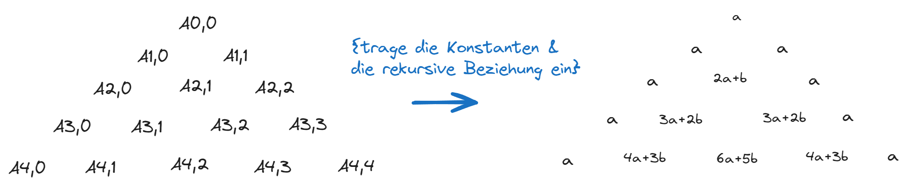
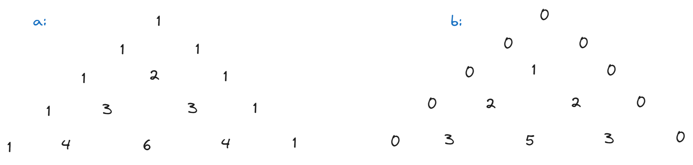

Zettel 03
Aufgabe 2
2.1
Folgendes Program loesst das problem (auch im zip als potenz.cc enthalten)
#include "fcpp.hh"
int quadrat (int x)
{
return x*x;
}
int potenz(int x, int n)
{
return cond(n == 0,
1,
cond(n % 2 == 0,
quadrat(potenz(x, n / 2)),
x * potenz(x, n - 1)));
}
int main(int argc, char** argv)
{
return print(potenz(
readarg_int(argc, argv, 1),
readarg_int(argc, argv, 2)));
}Argumente muessen in der Konsole eingegeben werden, z.B.:
$ ./potenz 4 3
81Aufgabe 3
3.1
Folgendes Program realisiert die rekursive Berechnung der Binomialkoeffizienten (auch im Zip enthalten):
#include "fcpp.hh"
int binomial(int n, int k)
{
return cond(k == 0 || k == n,
1,
binomial(n - 1, k - 1) + binomial(n - 1, k));
}
int main(int argc, char** argv)
{
return print(binomial(
readarg_int(argc, argv, 1),
readarg_int(argc, argv, 2)));
}Wir haben das Program auf verschieden Werte \(n\) und \(k\) getestet (zusammen mit der time Funktion fuer Messung der Laufzeit) und die Ergebnisse in der folgenden Tabelle zusammengefasst:
Specs des Systems auf der wir getestet haben: * PC: ThinkCentre M700 * Processors: 4 × Intel® Core™ i5-6400 CPU @ 2.70GHz * Memory: 15,5 GiB of RAM
| Befehl | Ergebniss | Laufzeit (real) |
time ./binomial 1 0 |
1 | real 0m0,004s |
time ./binomial 1 1 |
1 | real 0m0,002s |
time ./binomial 3 2 |
3 | real 0m0,002s |
time ./binomial 10 4 |
210 | real 0m0,004s |
time ./binomial 20 13 |
77520 | real 0m0,007s |
time ./binomial 32 15 |
565722720 | real 0m3,519s |
time ./binomial 36 13 |
-1984177696 | real 0m13,791s |
Wie aus der Tabelle ist die Laufzaut \(>10s\) fuer die Berechnung time ./binomial 36 13 jedoch mit dem falschen Ergebniss -1984177696 statt das richtige \(\binom{36}{13} = 2310789600\). Wir erklaeren diesen Phaenomen in der folgenden Teilaufgabe.
3.2
Fuer \(n = 34\), \(k = 18\) liefert das Program
$ ./binomial 34 18
-2091005866im Gegensatz zu dem erwarteten mathematischen Ergebniss \(\binom{34}{18} = 2203961430\).
Dieser ‘Fehler’ liegt an der 32 bit 2er Komplement Darstellung des Datentyps int auf dem Computer. Darunter koennen eine endliche Anzahl von int Zahlen dargestellt werden, die im Bereich \([-2^{31}, 2^{31} - 1] = [-2147483648, 2147483648]\) liegen. Das mathematische Ergebnis liegt also ausserhalb des darstellbaren Bereiches mit \(2203961430 > 2147483648\).
Da, unter der 2er Komplement Darstellung der MSB (Most Significant Bit) den Bereich der Negativen Zahlen representiert kann die Addition zweier groessen Zahlen, deren Ergebniss ausserhalb des darstellbaren Bereiches liegt wieder bei dem negativen Bereich landen, aehnlich wie Modulorechnung. Das wird als overflow bezeichnet.
3.3
Sei \(A_{n, n} = \alpha = A_{n, 0}\) und \(\beta := \text{Die konstanten Kosten der Addition}\). Dann gilt:
\[\begin{align*} &A_{n, k} = A_{n-1, k-1} + A_{n-1, k} + \beta \tag{Rekursive Beziehung des Rechenaufwands} \\ &A_{n, 0} = \alpha = A_{n, n} \end{align*}\]
Da die rekursive Beziehungs des Rechenaufwands eine aehnliche Beziehung wie die Binomialkoeffizienten erfuellen koennen diese in einem paskalschen Dreieck wie folgt eingetragen werden (Siehe Figure 1)

Betrachten wir nur die Koeffizienten von \(\alpha\) und \(\beta\) seperat so erhalten wir folgende paskalschen Dreiecke (Siehe Figure 2)

Von diesen Figuren ist es leicht zu sehen, dass \(\alpha_{n, k} = B_{n, k}\) und \(\beta_{n, k} = B_{n, k} - 1\), wobei \(\alpha_{n, k}, \beta_{n, k}\) die Koeffizienten von \(\alpha\) bzw. \(\beta\) sind bzgl der Rechenaufwands \(A_{n, k}\).
Somit erhalten wir:
\[A_{n, k} = B_{n, k}\alpha + (B_{n,k} - 1)\beta\]
Formaler Beweis:
Fuehre die Variablentransformation \(\tilde{A}_{n, k} := \frac{A_{n, k} + \beta}{\alpha + \beta}\). Dann erhalten wir die folgende rekursive Gleichung:
\[\begin{align*} &\tilde{A}_{n, k} = \tilde{A}_{n-1, k-1} + \tilde{A}_{n-1, k} \\ &\tilde{A}_{n, 0} = 1 = \tilde{A}_{n, n} \end{align*}\]
Das ist genau die Definition des Binomialkoeffizientes \(B_{n, k}\). Somit gilt:
\[\begin{align*} \tilde{A}_{n, k} &= B_{n, k} \\ \Rightarrow A_{n, k} &= (\alpha + \beta)\tilde{A}_{n, k} - \beta \\ &= (\alpha + \beta)B_{n, k} - \beta \quad \blacksquare \end{align*}\]